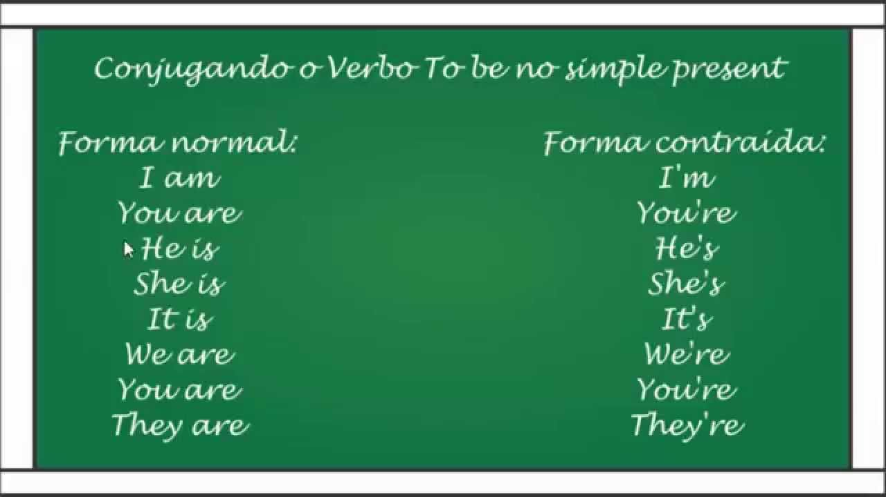

Inglês I
Ministrada pelo Prof. Carlos Gonsalves, presente nos seis semestres do curso, tem como objetivo guiar o aluno tecnólogo em sistemas para internet, á aprender tanto a falar, quanto a escrever. No mundo de Tecnologia da Informação(TI), o inglês está presente em grande parte das linguagens de programação, sendo necessário ao programador entender a língua inglesa.
Aprender a língua inglesa é de grande utilidade. Com ela você será capaz de morar e trabalhar no exterior, conhecer outros paises, entender e cantar perfeitamente a letra de músicas internacioanis, além disso, as empresas brasileiras valorizam muito a língua inglesa no currículo de seus futuros colaboradores.
No primeiro semestre de inglês é aprendido o alfabeto, os números de 0 -10, cumprimentos como olá e boa tarde, pronomes, adjetivos, verbo to be ...
Confira alguns exemplos da matéria ensinada em aula
Neste exemplo é mostrado, os cumprimentos entre duas pessoas.
Neste outro é mostrado, a conjugação do verbo to be, verbo essencial na língua inglesa,no passado simples.
